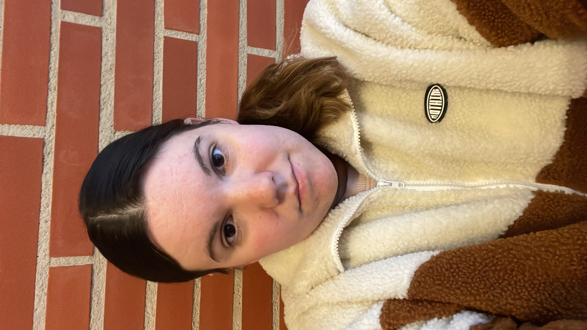

Dunia Cañas Puig

| Dirección de correo electrónico |
Número de teléfono |
| dcanas1@inscaparrella.cat |
617928348 |
Sobre mí
Soy una persona responsable y comprometida, capaz de trabajar de manera efectiva tanto en equipo como de forma autónoma, me caracterizo por tener una actitud proactiva y orientada a resultados, siempre dispuesta a asumir nuevos retos y aprender de ellos.
Experiencia laboral
Monitora de personas con diversidad intelectual (Prácticas), Centro Ocupacional, La Torxa
- Fomento del bienestar emocional y seguridad de la persona.
- Supervisión y motivación en actividades de ocio y formación.
- Apoyo en actividades educativas, recreativas y de desarrollo personal.
Dependiente de tienda, SIFA
- Reposición de productos
- Atención al cliente
- Descarga de palets
- Introducción de inventario
Limpiadora de oficinas, SIFA
- Limpieza de mobiliario
- Cristales
- Aparatos de oficina
- Baños
Limpiadora de oficinas, GENSER S.L
- Limpieza de mobiliario
- Cristales
- Aparatos de oficina
- Baños
Educación y formación
- Educación secundaria obligatoria, CPEPA Bajo Cinca
- Técnico en Atención a Personas en Situación de Dependéncia, INS Ronda
Idiomas
Permiso de conducción